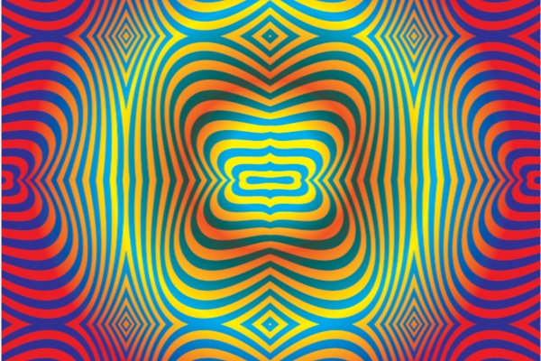

Josh Weingart
(no relation) is a designer living in Brooklyn. He spent two years helping the School of Visual Arts design and define its
new website
. He knows how to create and maintain design systems inside and out, and a Sketch aficionado who can make interactive prototypes.
In addition, he has created
branding for a bike company
,
parallax scrolling prototypes for SVA’s digital viewbook

,
web assets for Estée Lauder
,
branding for a bookstore
,
an American Classics cover series
,
a visitor’s guide for Dia:Beacon
,
packaging for a ham radio antenna
,
a 99 days of design challenge
,
and a thesis on video game environmental design
. He has a design BFA from SVA.
Josh is currently in between full-time work, and he's always down to collaborate. He can be reached
here
.